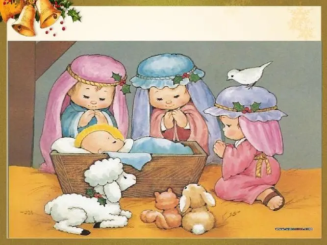

基督教纪念耶稣诞生的重要节日。亦称耶稣圣诞节、主降生节，天主教亦称耶稣圣诞瞻礼。耶稣诞生的日期，《圣经》并无记载。公元336年罗马教会开始在12月25日过此节。12月25日原是罗马帝国规定的太阳神诞辰。有人认为选择这天庆祝圣诞，是因为基督教徒认为耶稣就是正义、永恒的太阳。5世纪中叶以后，圣诞节作为重要节日，成了教会的传统，并在东西派教会中逐渐传开。因所用历法不同等原因，各教派会举行庆祝的具体日期和活动形式也有差别。圣诞节习俗传播到亚洲主要是在十九世纪中叶，日本、韩国等都受到了圣诞文化的影响。现在西方在圣诞节常互赠礼物，举行欢宴，并以圣诞老人、圣诞树等增添节日气氛，已成为普遍习俗。圣诞节也成为西方世界以及其他很多地区的公共假日。
圣诞老人源于欧洲的基督教圣人典故。他拥有9只名字各不相同的驯鹿，最大的烦恼是有烟囱爬的房子越来越少了。通常父母们会对他们的子女解释他们在圣诞节收到的礼物是圣诞老人送的。圣诞老人以一位神秘人物带给小孩子们礼物的概念衍生自圣尼古拉。尼古拉是一位生活在4世纪小亚细亚的热爱施舍的慈悲主教，荷兰人在圣尼古拉斯节（12月6日）便会模仿他送礼物。
圣诞树的由来之二 一位农民在圣诞节之夜接待了一个穷苦的儿童,儿童临别时折了一支杉树插在地上,小枝立即成树。儿童说:“年年此日,礼物满枝,留此美丽的杉树,报答你的好意。